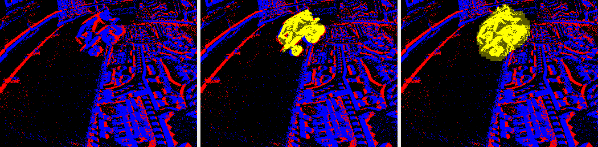

Motion-aware odometry from a single event camera
A robot guiding a blind person through a station has to know where it is from its own sensors, here a single event camera. The best learned event-only odometry, DEVO, assumes the world is static, and the people walking in front of the robot break that assumption exactly where it matters. I taught it to notice what moves on its own, and to stop trusting it: trained jointly with the odometry, the module cuts the trajectory error by 41% on EVIMO2, and still by 37% without a single segmentation label.

Read moreShow less
The idea comes from DynaSLAM: detect what moves independently, and stop trusting it. Rather than cleaning the event stream with a dense mask upstream of the odometry, as the closest prior work does, I used two places DEVO already exposes: the score map that picks which patches to track, and the per-edge confidence of its differentiable bundle adjustment.
A small causal ConvLSTM (1.0 M parameters) predicts a soft "dynamic" weight that is multiplied into both. Nothing is deleted, so the sparse patch structure DEVO relies on survives, and the whole chain stays differentiable. That means the segmentation module can be trained jointly with the odometry, so the mask learns what hurts the pose rather than what looks like an object, and it can even be supervised by the bundle adjustment's own rigid-motion residual, without any label.
For scale, a perfect ground-truth mask gives 45% on EVIMO2: the jointly trained module closes nine tenths of that gap, against 27% for the same module trained on its own. Five configurations were compared on EVIMO1, EVIMO2 and, without retraining, on four external datasets (MVSEC, EDS, TUM-VIE, VECtor), where the modules improve the base system in 15 of 20 evaluations. Three results are negative and reported as such. On EVIMO1, run-to-run noise is as large as every effect measured. Scaling up the segmentation module helps neither segmentation nor odometry, and its initialisation has no systematic effect.
I am now turning the work into a paper and a clean public codebase.
- where
- NUS, IPAL (CNRS), Singapore
- stack
- pytorch · convlstm · differentiable bundle adjustment · wandb · slurm